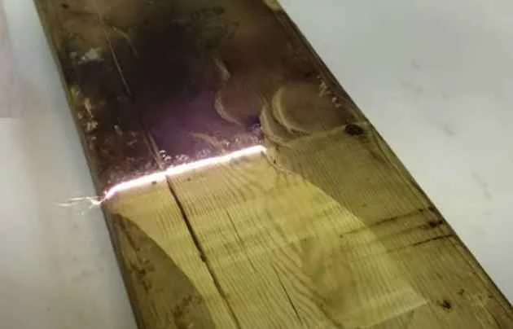

Limpieza con Láser vs. Limpieza Criogénica: Métodos Innovadores en Conservación

La conservación de obras de arte y monumentos históricos ha avanzado significativamente con la introducción de tecnologías como la limpieza con láser y la limpieza criogénica. Ambos métodos ofrecen ventajas únicas y desafíos específicos, transformando la manera en que se aborda la preservación del patrimonio cultural. Este artículo profundiza en cada técnica, comparando su eficacia, aplicabilidad y sostenibilidad en proyectos de conservación.
Introducción
La importancia de preservar nuestro patrimonio cultural es incuestionable. Las técnicas de limpieza juegan un papel crucial en este esfuerzo, donde la precisión y la minimización del daño son primordiales. La limpieza con láser y la limpieza criogénica son dos de las tecnologías más avanzadas disponibles actualmente, cada una con sus propios méritos y limitaciones.
Fundamentos de la Limpieza Láser
La limpieza con láser utiliza la luz láser para eliminar la suciedad, los contaminantes y otros materiales no deseados de la superficie de objetos sin causar daño. Es un método no invasivo que permite una limpieza precisa, siendo especialmente útil en superficies delicadas o con detalles finos.
Ventajas
Precisión en la eliminación de contaminantes sin afectar el substrato.
No utiliza químicos, reduciendo el impacto ambiental.
Capacidad para limpiar áreas de difícil acceso sin contacto físico.
Desafíos
Requiere equipos costosos y operadores altamente capacitados.
No es universalmente aplicable a todos los tipos de suciedad o materiales.Fundamentos de la Limpieza Criogénica
La limpieza criogénica, por otro lado, utiliza dióxido de carbono sólido (hielo seco) proyectado a alta velocidad para limpiar superficies. Al impactar, el hielo seco sublima (pasa de sólido a gas) eliminando la suciedad mediante un proceso de choque térmico, sin dejar residuos húmedos o químicos.
Ventajas
Efectivo en una amplia gama de contaminantes, incluyendo grasas y aceites.
Proceso seco que no genera residuos secundarios, ideal para materiales sensibles al agua.
Rápido y eficiente, capaz de cubrir grandes áreas en poco tiempo.
Desafíos
Puede ser abrasivo para ciertos materiales delicados.
Requiere precauciones de seguridad específicas debido a la naturaleza del material y el proceso.Comparación entre Limpieza con Láser y Criogénica
Eficacia y Aplicabilidad: La limpieza con láser brilla en la precisión y es ideal para objetos delicados o detallados, mientras que la limpieza criogénica es más adecuada para la limpieza general y la eliminación de contaminantes pesados.
Impacto Ambiental: Ambas técnicas son consideradas ambientalmente amigables. La limpieza con láser es notablemente limpia, sin generar residuos, mientras que la limpieza criogénica, aunque genera poco residuo, requiere el manejo adecuado del CO2 sublimado.
Costo y Accesibilidad: La limpieza con láser puede ser más costosa debido al precio del equipo y la necesidad de operadores especializados. La limpieza criogénica, aunque requiere equipamiento específico, suele ser menos costosa en términos de operación y mantenimiento.Selección del Método de Limpieza
La elección entre limpieza con láser y criogénica dependerá de varios factores, incluyendo el tipo de material a limpiar, la naturaleza de la suciedad, las consideraciones presupuestarias y los objetivos específicos del proyecto de conservación. Es esencial realizar una evaluación detallada antes de decidir el método más apropiado.
Conclusión
Tanto la limpieza con láser como la criogénica representan avances significativos en la conservación del patrimonio cultural. La decisión entre una u otra tecnología debe basarse en un análisis cuidadoso de las necesidades específicas del objeto o superficie a tratar, así como en las prioridades de conservación. Ambos métodos tienen el potencial de continuar evolucionando, ofreciendo soluciones aún más efectivas y sostenibles para los desafíos de conservación del futuro.
Preguntas Frecuentes
¿Qué método de limpieza es más seguro para obras de arte delicadas?
¿Puede la limpieza criogénica dañar las superficies porosas o sensibles?
¿Cuál es el impacto ambiental de la limpieza con láser comparado con la criogénica?
¿Cómo afecta el costo la elección entre limpieza con láser y criogénica para un proyecto de conservación?
¿Qué avances tecnológicos se esperan en el campo de la limpieza de patrimonio cultural?Basándonos en el artículo anterior, aquí respondemos las preguntas frecuentes sobre la limpieza con láser y la limpieza criogénica en la conservación de patrimonio cultural.
1. ¿Qué método de limpieza es más seguro para obras de arte delicadas?
La limpieza con láser es generalmente más segura para obras de arte delicadas debido a su precisión y capacidad para ajustar la intensidad del láser según el tipo de material y la suciedad a eliminar. Esta metodología permite limpiar sin contacto físico, lo que reduce el riesgo de daños mecánicos en superficies delicadas o detalladas.
2. ¿Puede la limpieza criogénica dañar las superficies porosas o sensibles?
Sí, la limpieza criogénica puede ser potencialmente abrasiva para superficies porosas o sensibles. Aunque es eficaz para eliminar una amplia gama de contaminantes, el impacto del hielo seco a alta velocidad podría dañar materiales delicados o alterar la textura de superficies porosas. Es crucial evaluar la compatibilidad del material con este método antes de su aplicación.
3. ¿Cuál es el impacto ambiental de la limpieza con láser comparado con la criogénica?
Ambos métodos son considerados ambientalmente amigables, pero tienen diferencias en su impacto. La limpieza con láser no genera residuos, no utiliza químicos y su impacto ambiental es mínimo. Por otro lado, la limpieza criogénica, aunque no deja residuos químicos y utiliza CO2 reciclado de procesos industriales, implica la sublimación del dióxido de carbono sólido a gas, lo que podría considerarse en términos de emisiones de carbono. Sin embargo, en comparación con métodos que utilizan solventes químicos, ambos son opciones más verdes.
4. ¿Cómo afecta el costo la elección entre limpieza con láser y criogénica para un proyecto de conservación?
El costo es un factor importante en la elección del método de limpieza. La limpieza con láser tiende a ser más costosa inicialmente debido al precio de los equipos y la necesidad de operadores especializados. La limpieza criogénica, aunque requiere también equipamiento específico, suele tener un costo operativo menor y es más rápida en cubrir grandes áreas. La decisión deberá basarse en un balance entre el costo, la eficacia del método para el tipo específico de suciedad y material, y los recursos disponibles para el proyecto.
5. ¿Qué avances tecnológicos se esperan en el campo de la limpieza de patrimonio cultural?
Se anticipan continuos avances en ambas tecnologías, con mejoras en la eficiencia, la precisión y la sostenibilidad ambiental. En la limpieza con láser, esperamos ver desarrollos que permitan ajustes más finos en la configuración del láser para adaptarse a una gama aún más amplia de materiales y tipos de suciedad, así como equipos más accesibles y fáciles de operar. Para la limpieza criogénica, los avances podrían incluir tecnologías que minimicen aún más el impacto físico en superficies delicadas y optimicen el uso del CO2 para reducir el impacto ambiental. Además, la integración de inteligencia artificial podría mejorar la precisión y eficacia de ambos métodos, personalizando la limpieza a las características específicas de cada obra o monumento.